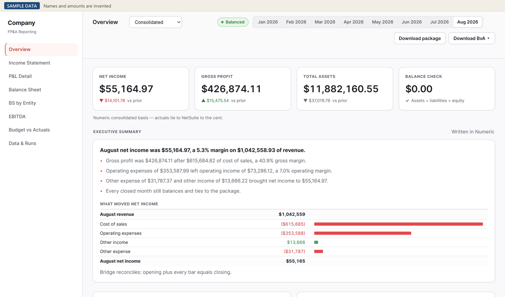
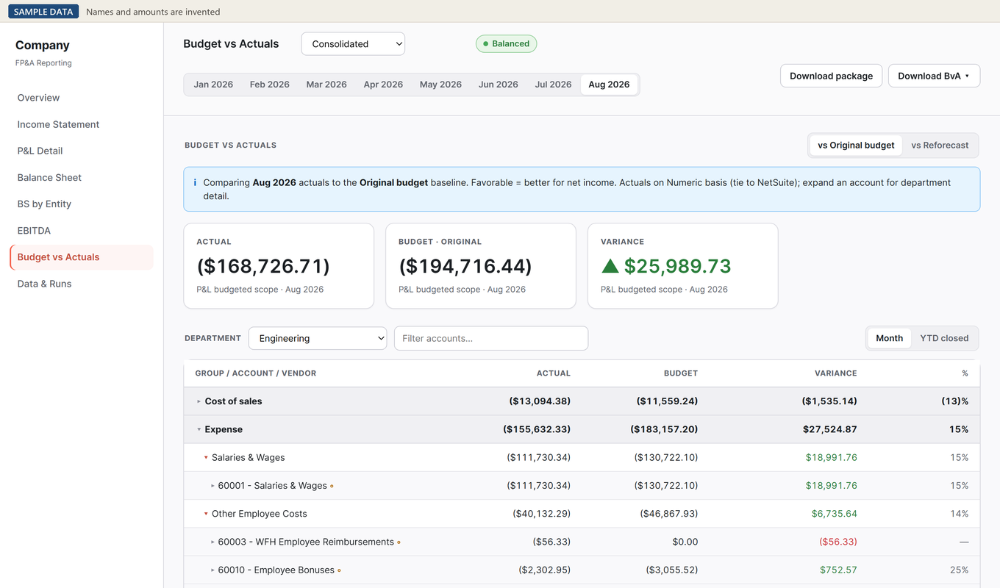
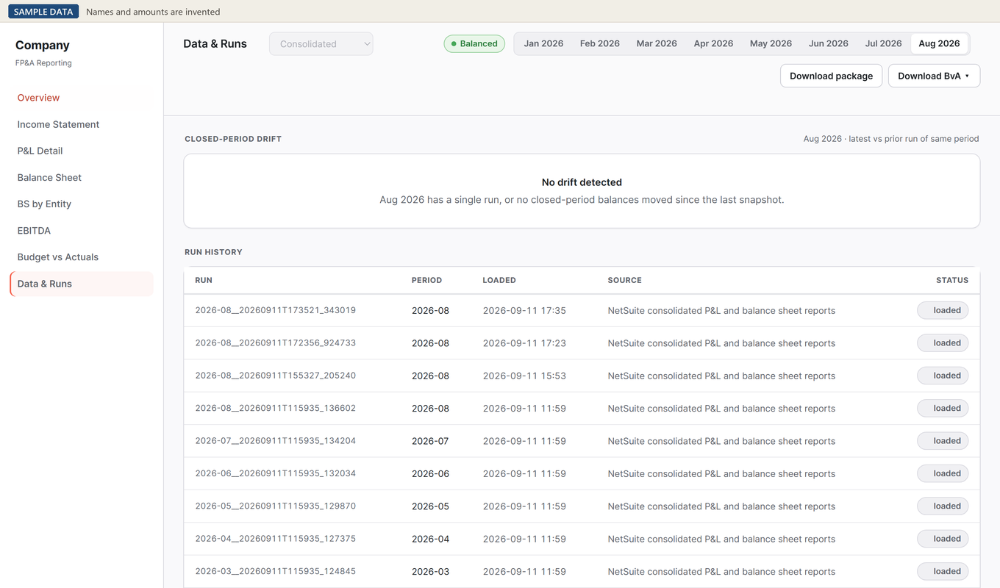
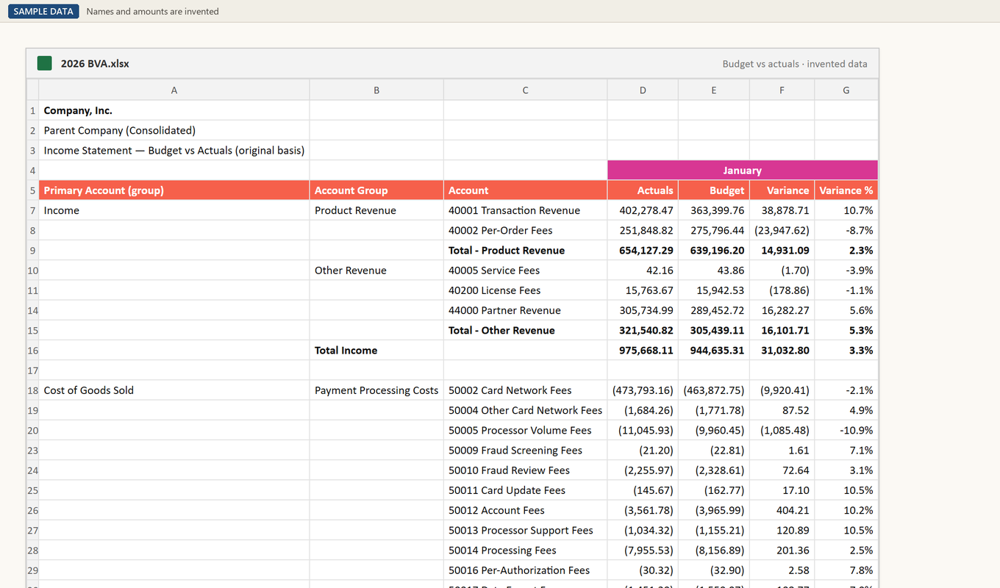
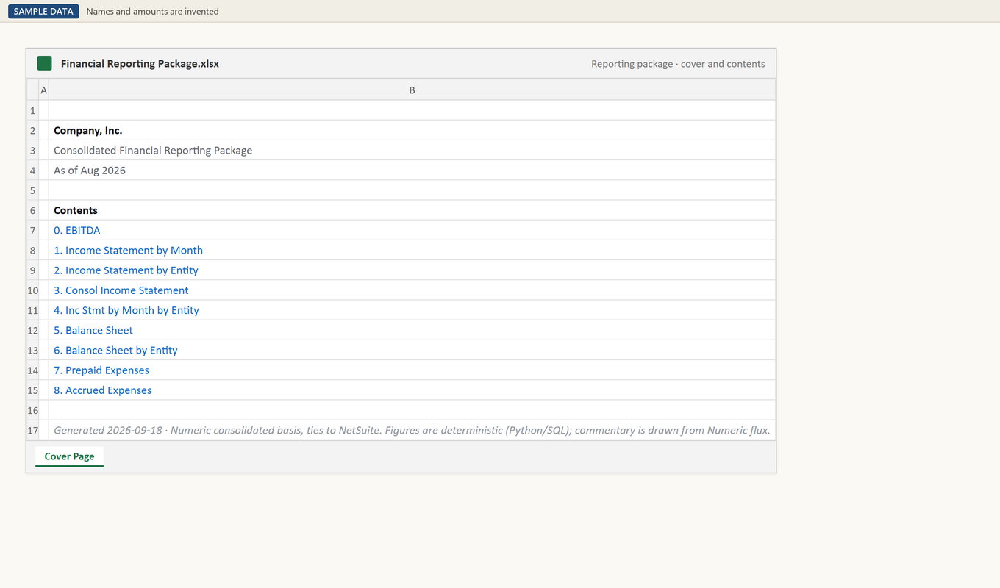

Case study
The thirty-minute re-run
I rebuilt our monthly reporting package so a re-run takes under 5 minutes instead of 30, and every closed month of 2026 balances and its net income ties to Numeric.
- Role
- Built it. I decided what it had to produce and I check the output against the source data. Claude wrote the code.
- When
- Built in July 2026, moved onto NetSuite reports in September
- Tools
- NetSuite, Numeric, SQL, Python, Claude
- Results
- 30 minutes to under 5 per run (timed)
- All 8 closed months balance and tie to Numeric
- 74 runs kept, no closed month flagged as changed


The problem
Every time we closed a period I'd pull the reports, analyze the numbers and write the commentary, and every time something would have to change.
Any change meant pulling all the reports again and consolidating them again, which took me 30 minutes each time. It happened maybe 2 to 4 times per close, I never actually counted.
So you can imagine what it's like when you thought you were already done and there's pressure to finish and send the package so the CEO can review it.
What I built
I built the dashboard in July 2026, once my ERP and close platform were connected to an AI assistant and the gears started grinding.
- Two NetSuite reports I built for it, one P&L and one balance sheet, so the data pulls cheaply and accurately.
- Claude pulls the reports from the ERP and the code builds every number deterministically.
- 8 views: overview, P&L detail, income statement, balance sheet, balance sheet by entity for our 6 legal entities, adjusted EBITDA, budget vs actuals on both the original budget and the reforecast, and a page for data and runs.
- Commentary is written by people in Numeric's flux reports and pulled in as is.
- Prepaid and accrual tabs my VP asked for, laid out so someone who isn't an accountant can follow them. I rebuilt both straight from ERP data instead of hand-kept schedules, so the method is deterministic end to end.
- The whole package exports in one click, plus a second version in the format the CEO expects.
Case study · Reporting package
Reports pulled from NetSuite, every number built by code, all of it tied back account by account, and the whole package out in one click.
Before: manual ERP exports, consolidated in spreadsheets.
Sources
Build and check
Finance dashboard
- Profit and loss
- Balance sheetConsolidated and by entity
- Flux commentary
- Budget vs actualsMonthly and quarterly Budget basis: Original (selected)Reforecast
One click out
Commentary is written by people, in Numeric, and pulled through. The numbers stay deterministic, in SQL and Python, with human review before anything reaches leadership.
Every figure on this page is sourced in the case study. No company financials are shown.


How I know it works
- At the end, everything that comes from NetSuite gets tied back to it, account by account and in total, and budget vs actuals ties down to department and vendor.
- Every closed month so far this year, January to August, ties two ways. Assets equal liabilities plus equity within $0.02, and net income ties to Numeric.
- Every load of a month gets saved as a run instead of overwriting the last one, and a closed month that comes back different on a reload gets flagged. I wanted that so any adjustment shows up against what we already sent.
- From July 22 to September 11 there were 74 runs, and no closed month is flagged as changed. That also means the drift check hasn't been tested on a real change yet.
Case study · Reporting package
Every closed month of 2026 so far is tied two ways. A closed month that comes back different on a reload gets flagged, and none is flagged.
| Check | Jan | Feb | Mar | Apr | May | Jun | Jul | Aug |
|---|---|---|---|---|---|---|---|---|
| Balance sheet balancesAssets against liabilities and equity, to the cent or two | Pass | Pass | Pass | Pass | Pass | Pass | Pass | Pass |
| Net income tiesAgainst Numeric | Pass | Pass | Pass | Pass | Pass | Pass | Pass | Pass |
| Not flagged as changedNone flagged in the September 18 build | Pass | Pass | Pass | Pass | Pass | Pass | Pass | Not reloaded since it closed |
January to August 2026, runs from July to September. Pass marks only, and no amounts are shown. August hasn’t been reloaded since it closed.


Deep dive
After the package is sent
How every load of a month is kept, how a month moves from Open or Provisional to Pass, how a closed month is watched once it's gone to the CEO, and what the tie-outs prove.
Read the deep dive →
Results
- A full run takes me under 5 minutes, against 30 before. I timed both.
- So when something changes after close, I just run it again.




What didn't work
- The first time I tried pulling ERP data through Claude, it burned through my usage allowance really fast because it kept retrying queries it didn't have access to. So I built on our package workbook and then Numeric first, then built the two NetSuite reports myself and moved the P&L and balance sheet to them on September 11.
Limits and what's next
- The executive summary section is empty, and the build only carries one summary tagged to one month, so writing them all wouldn't fix it yet.
- The commentary cells can still be edited on the dashboard, and an edit there never goes back to Numeric. They should be read-only.
- The balance sheet is off by up to $0.02 in some months and the check lets it pass. I hate that, it should tie to the penny.
- The overview still says "Numeric consolidated basis" even though the P&L and balance sheet come from NetSuite now.
- We're moving to a new ERP, run in parallel with NetSuite at first. I expect to repoint the package's pulls to it, or use the reporting it has built in.
- Next: a better way to bring our reforecast into the dashboard. That's in progress.
How these numbers are sourced
Parsed from the dashboard itself (built September 18, 2026), through a structural extract with no amounts in it: the 8 views, the 6 entities, 12 months per budget basis, the EBITDA definition, the $0.02 balance check, the net income tie in all 8 months, the 74 runs and their statuses, no closed month flagged as changed, the switch to NetSuite reports on September 11, the empty executive summary, the editable commentary cells and the stale overview label.
Timed by me: 30 minutes before, under 5 after. I didn't write either timing down.
My estimate, not a count: 2 to 4 re-runs per close.
My own account: when and why I built it, the drift requirement, where commentary is written, the first ERP pull that burned my usage, building the NetSuite reports myself, that Claude pulls the reports while code builds the numbers and ties them account by account, the prepaid and accrual tabs, the CEO-format export, and that Claude writes the code.